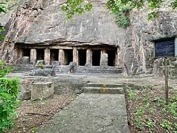

Akkanna Madanna Caves
The Akkanna Madanna Caves are rock-cut caves located in Vijayawada, Andhra Pradesh. These ancient caves are renowned for their historical and archaeological significance. They are named after two brothers, Akkanna and Madanna, who served as ministers in the court of the Qutb Shahi dynasty.
Location: Vijayawada, Andhra Pradesh, India
History: The caves date back to the 7th century and showcase exquisite carvings and sculptures. They are a testament to the architectural prowess of ancient India.
Attractions: The caves feature intricately carved pillars, sculptures of deities, and ancient inscriptions. They provide a glimpse into the religious and cultural history of the region.
Activities: Exploring the caves, photography, and studying the ancient inscriptions and carvings.
Visiting Hours: 9:00 AM - 5:00 PM
Entrance Fee: ₹20 for adults, ₹10 for children